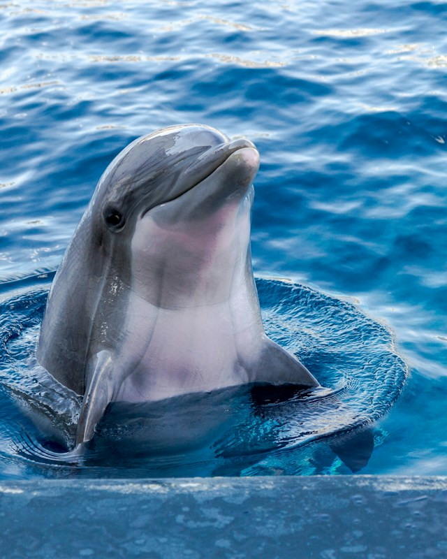

Whale, also known as whale, is a common name for a part of the Marine mammal cetacea
Whales, dolphins and finless porpoises, all belonging to the order artiodactylus, and their closest relatives of the two-toed ungulates are hippos. They diverged about 40 million years ago, and paleontologists believe that they first evolved from bucky whales into amphibious cetaceans such as walking whales, and then into fully aquatic cetaceans such as Basilosaurus
Baleen whales
Toothed whales

@wangzhuo
Email meI want to go see WHALE!
About Whale Another Whale
Another Whale
Whales breathe with their lungs and swim to the surface to breathe every four hours. They are warm-blooded, with a body temperature of about 37 and a heartbeat of only 10 beats per minute. Their young are fed by mammals and have little hair. Some species can dive to great depths, often having a thick layer of fat, or blubber, that keeps them warm in cold water
At present, the whaling countries include Norway, Iceland and Japan, as well as the Faroe Islands, Siberia, the United States (Alaska) and some indigenous tribes in northern Canada. On the issue of whaling, the opposition is mainly some environmental organizations such as Greenpeace, the World Wildlife Fund, etc. However, in recent years, the governments of Australia, Brazil and other countries have also stepped in to oppose whaling
Jump to top 